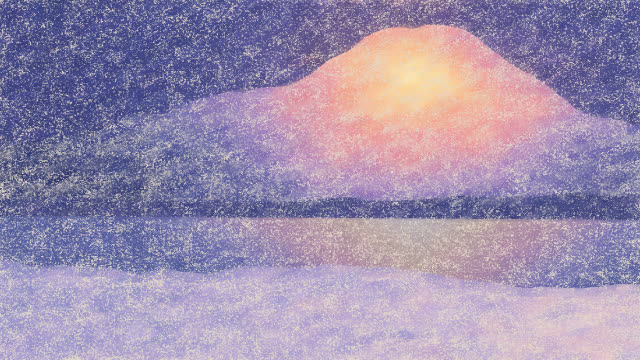
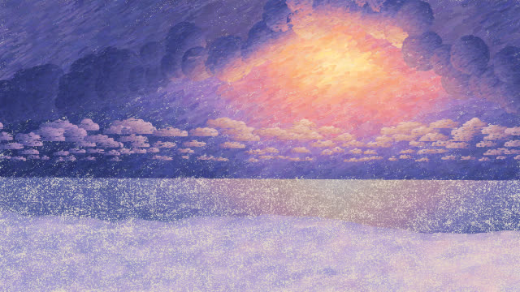
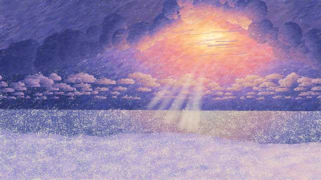
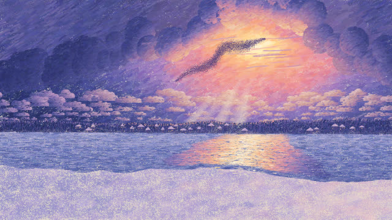
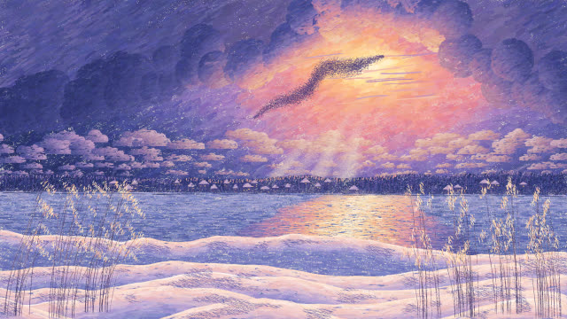
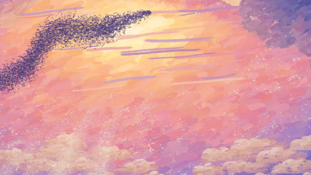

작업 흐름
- 입력
- 이야기 · 기억 · 감정 목록 하나(둘도 가능), 원하면 팔레트와 붓질을 배울 참고 그림 폴더
- 브리프
- 장면별 감정표(무게 · 온도 · 움직임 · 빛), 절대 그리지 않을 것 목록, 감정 → 날씨 · 빛 · 장소 · 색 번역표, 한 장면 한 줄, 16:9 구도, 팔레트 램프와 종이 색, 재료 3–5개와 각자의 역할
- 그리기
- 스틱 옆면으로 화면 전체 밑칠 → 큰 덩어리의 끊긴 색 해칭과 지그재그 → 덩어리 하나로 빛을 받는 구름 · 눈 둔덕의 형태 해칭 → 어두운 색 위에 밝은 오일파스텔, 지우개로 빛 걷어내기, 손가락 블렌딩 → 시선이 머무는 곳의 작은 색연필 자국 → 마지막 어두운 강조
- 확인
- 16:9, 재료 3–5개, 빈 종이 없음, 고르게 평평한 디지털 면 없음, 명도 범위, 날아가거나 뭉개진 곳 없음, 그리지 않을 것 목록의 단어가 코드에 없음, 결정성, 스틸 채점 기준 10개
- 출력
- 1920×1080 또는 3840×2160 PNG, 단계별 스틸과 100 % 확대 크롭, 그리는 과정 MP4, 획이 하나씩 그려지는 라이브 페이지
node feeling-pastel/scripts/new-piece.mjs my-piece
node feeling-pastel/scripts/render.mjs my-piece/art.js --stages --scale .5
node feeling-pastel/scripts/check.mjs my-piece/art.js
node feeling-pastel/scripts/render.mjs my-piece/art.js --scale 2 --crops
node feeling-pastel/scripts/render.mjs my-piece/art.js --film --seconds 30
node feeling-pastel/scripts/palette.mjs refs/요구 사항: Node 18+, 그리는 과정 MP4와 참고 그림 팔레트에만 ffmpeg. 브라우저 · GPU · npm 설치가 필요 없습니다(획 11만 개짜리 1920×1080 그림이 약 20초, 3840×2160이 약 70초). 단계별 순서는 SKILL.md에 있습니다.
샘플
원본에 없는 이야기 두 개를 브리프부터 그린 그림입니다. 카드를 누르면 새 탭에서 그 단계까지 그린 종이가 열리고, 브라우저가 같은 획을 직접 그립니다.
참았던 숨 예제 · 재료 5개 · 8단계 · 획 11만 개
몇 달을 기다린 합격 소식, 조용한 버스에서 소리를 참은 일, 언덕을 뛰어오른 겨울 공기, 집 계단의 찌개 냄새, 먼저 우는 엄마. 이야기 속 버스 · 휴대폰 · 사람 · 계단 · 음식은 하나도 그리지 않고, 기다림은 낮게 깔린 구름 천장으로, 합격은 그 천장이 찢어진 금빛으로, 참았던 기쁨은 빛 속에서 한 몸으로 도는 새 떼로, 돌봄은 건너편 강가의 작은 불빛 창들로 옮겼습니다.






여름방학 마지막 밤 시작 그림 · 재료 3개 · 4단계
new-piece.mjs가 복사하는 시작 그림입니다. 숙제를 남긴 채 평상에 누운 방학 마지막 밤(수박 · 모기향 · 개구리는 그리지 않음)을, 어두운 남색 색지 위에 속에서 희미하게 빛나는 큰 구름, 거울 같은 논, 반딧불로 그렸습니다. 밤 그림을 밝은 종이에 그리면 종이 결이 눈처럼 보여서 어두운 색지를 썼습니다.
실제 작품
이 레포에서 만든 스킬입니다. Kevin Ngo(@kevin_t_ngo)가 X에 공개한, 자바스크립트로 그린 그림의 프롬프트가 출발점입니다. 건식 재료 3–5개를 고르거나 지어낼 것, 디지털이 아니라 사람이 그린 것처럼, 16:9, 화면의 모든 픽셀을 쓸 것, 90년대 애니메이션의 색감, 그리고 긴 개인적인 이야기 두 개의 감정을 담되 그 이야기 속 어떤 것도 그리지 말 것. 이 스킬은 그 방법을 가져와 어떤 이야기에도 다시 쓸 수 있게 만들었고, 원본 그림(바닷가 마을과 연 수백 개)은 쓰지 않았습니다. 예제와 시작 그림의 이야기와 그림은 모두 이 레포의 것입니다.
링크
- SKILL.md 워크플로
- 폴더 lib · scripts · references · templates · examples
- README.md 빠른 시작
- references/SOURCE.md 원본 프롬프트의 구성, 가져온 것과 가져오지 않은 것
- references/BRIEF.md 브리프 틀과 스틸 채점 기준
- references/FEELINGS.md 감정을 이야기 없이 그림으로 옮기는 법
- references/TOOLS.md 건식 재료의 수치, 3–5개 고르기, 직접 만들기, 종이
- references/LOOK.md 손그림처럼 보이는 이유, 화면 전체, 90년대 애니 배경 색감
- references/DRAWING.md API와 그리는 순서
- references/LESSONS.md 겪은 문제와 해결